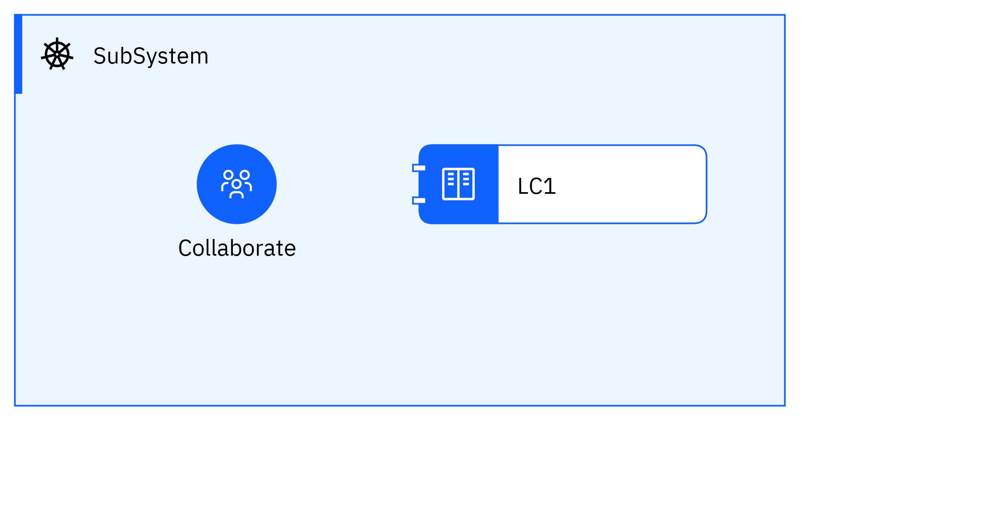

Show icon symbols Diagram¶  Name¶ Show icon symbols Description¶ Element¶ Expand all Actor¶ Collaborate Name Collaborate Description Type Human Generic Group Subsystem¶ SubSystem Name SubSystem Description Logical Component¶ LC1 Name LC1 Description Logical Connector¶